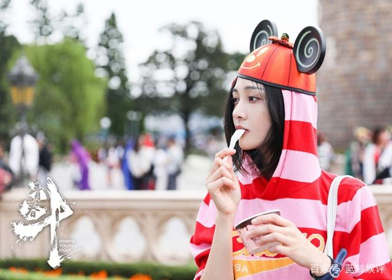
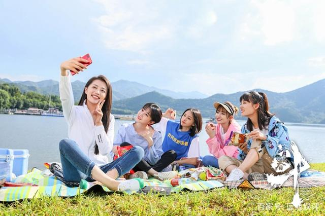
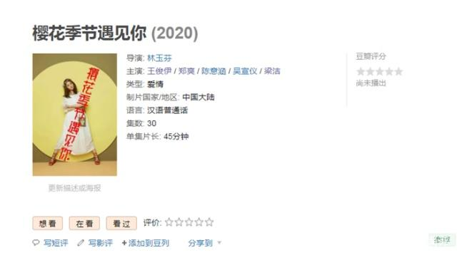
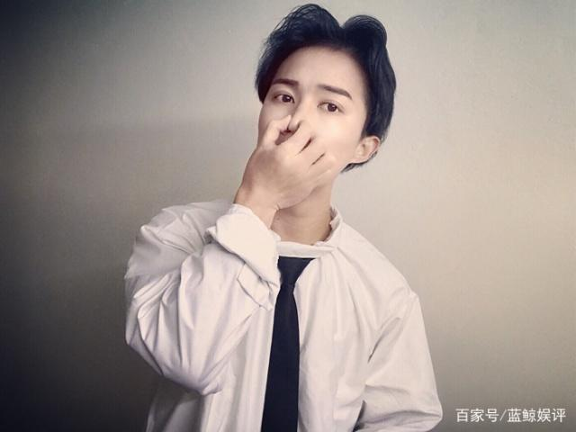
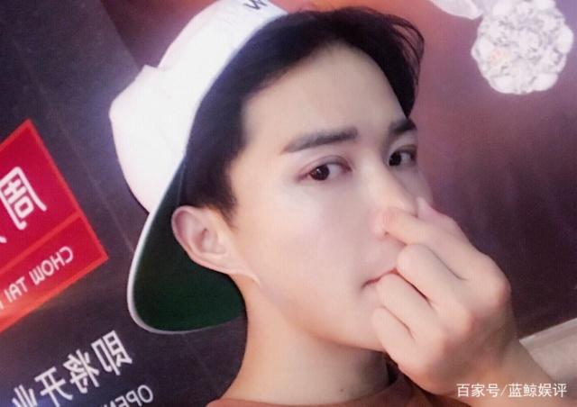

继《青春斗》后，郑爽又有新剧来袭，男主人选让人期待
郑爽这位小花旦大家应该都不陌生了吧？她是位已经出道有10年的女演员，因为演技和性格都很好所以喜欢她的人有很多。郑爽每年也没有让我们这些粉丝失望，因为她每年最主要的还是拍摄各种电视剧，去拍了不少剧所以今年又是她的刷屏年了！

《青春斗》相信大家都有看过这部电视剧在前两个月播出的时候非常火爆这部剧就由郑爽所主演，还记得电视剧播出前的宣传活动上赵宝刚导演公开赞扬了郑爽的演技，能得到导演的认可这就说明了郑爽真的已经成为了名实力派女演员了！

《青春斗》结局也有一段时间所以大家应该都很想看郑爽的新剧，虽然不知道她下部新剧会什么时候播出但在这里要说的是郑爽又有新剧来袭了，郑爽的这部新剧跟《青春斗》同类型也是部青春爱情剧，男主人选让人期待。
《樱花季节遇见你》 就是郑爽的新剧，对于这部剧相信大家都是陌生的吧？其实这很正常因为郑爽的这部新剧还没有正式开始拍摄，所以关于这部剧的消息比较少，不过电视剧官方已经公布了主演阵容，郑爽在剧中饰演的就是女主角，而男主人选让人期待。

剧中饰演男主角的演员名叫王俊伊，说到这位男星的时候认识的人应该不多吧？他是位刚出道不久的港星，虽然不出名但是从出道到现在出演过不少作品，比如有TVB两位知名演员黎耀祥、黄宗泽合作主演的电视剧《无双谱》中就有他的出演，因为当时在剧中演的是小配角所以认识他的人并不多。

虽然王俊伊并不是出名的明星但是他的演技还是挺不错的，而且颜值也高所以他跟郑爽合作主演《樱花季节遇见你》就很让人期待了！

继《青春斗》后，郑爽又有新剧来袭，男主人选让人期待，你期待郑爽的这部新剧播出吗？